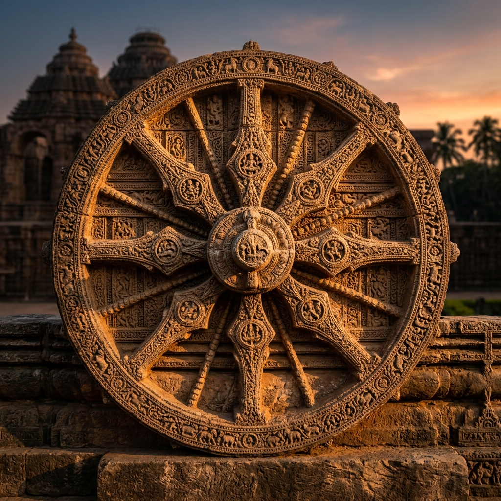
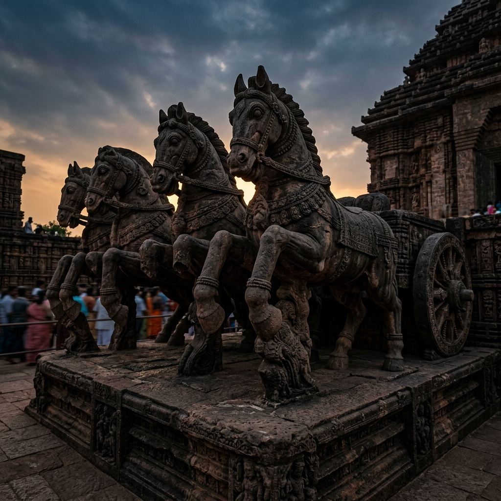
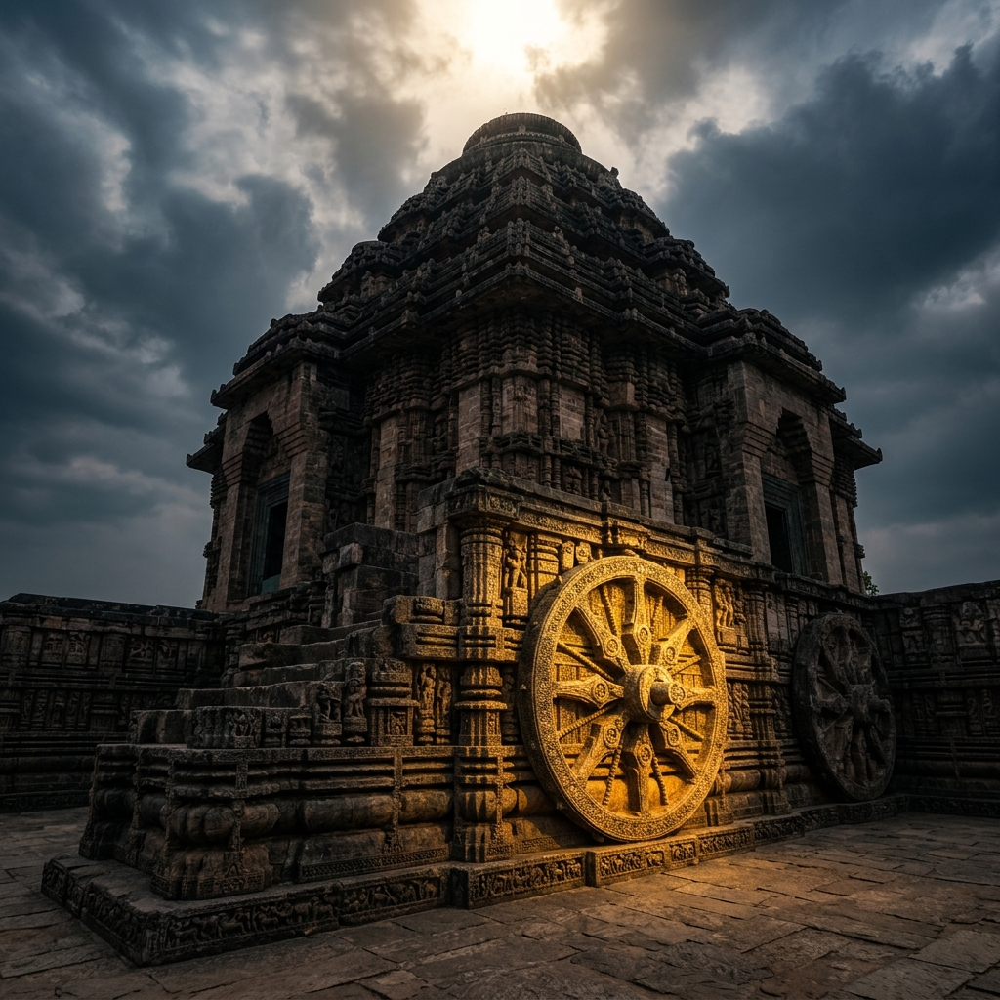

The Chariot of the Sun God
Ancient texts claim the temple's sanctity predates the 13th century. It is said that Samba, the son of Lord Krishna, was cured of leprosy after 12 years of penance dedicated to Surya at this very site. In gratitude, he installed the first image of the Sun God here, making Konark (Kona - Corner, Arka - Sun) the eternal "Corner of the Sun."



Local lore suggests that on quiet nights, the faint sound of ghungroos (ankle bells) can still be heard echoing through the Natyamandapa (Dancing Hall), where the temple dancers once performed to please the Sun God before the temple fell into silence.
Total Stone: Over 12 million cubic feet of Chlorite, Laterite, and Khondalite.
Labor: 1,200 master craftsmen worked for 12 years (1243-1255 CE).
Tower Height: Originally 70m (227ft), now only the Jagamohana (38m) stands.
The Wheels: 24 wheels representing the Pakshas (fortnights) of the year.